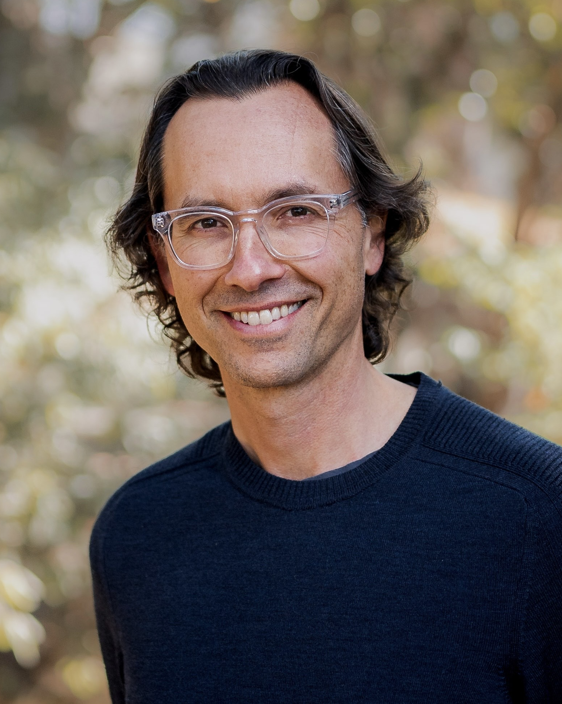
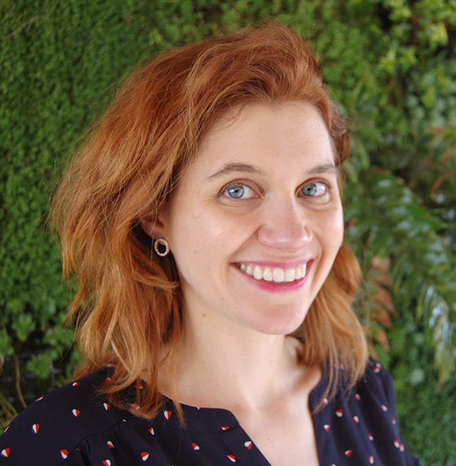
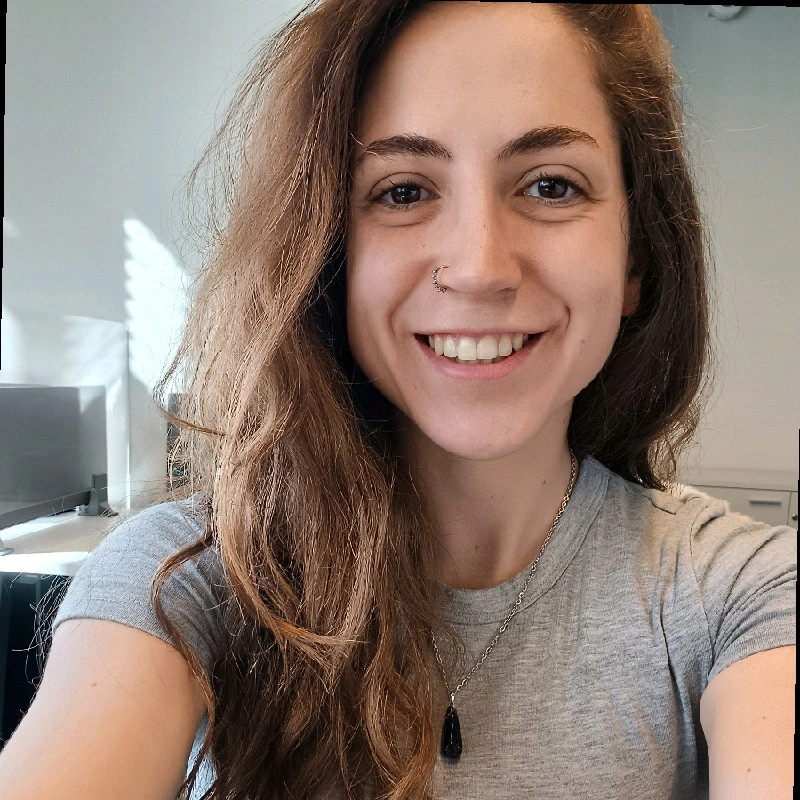
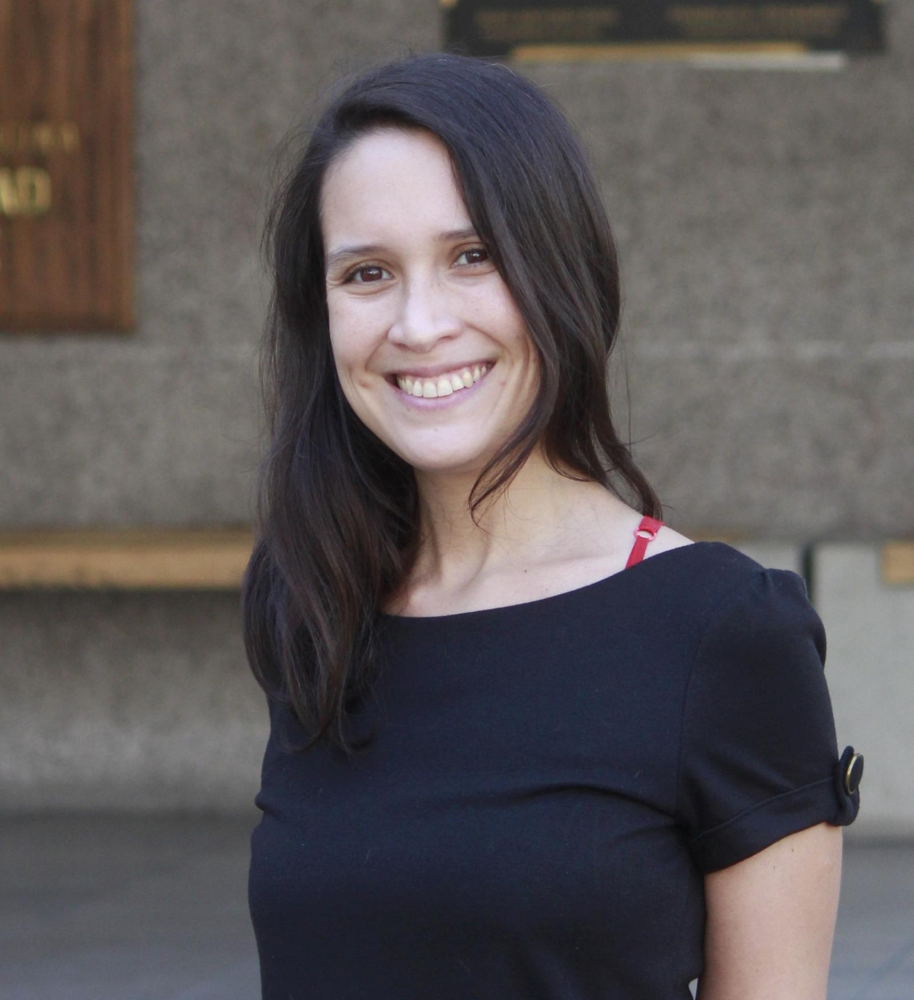

Invitados
Reproducibilidad con Impacto: Cómo la Ciencia Abierta Puede Cambiar el Mundo.

Edward Miguel es Profesor Distinguido de Economía y Oxfam Professor de Economía Ambiental y de Recursos en la University of California, Berkeley (desde 2000), además de co-director académico del Center for Effective Global Action (CEGA). Obtuvo sus títulos en Economía y Matemáticas en el Massachusetts Institute of Technology (MIT) y su doctorado en Economía en la Harvard University, donde fue becario de la National Science Foundation. Su investigación se ha enfocado en el desarrollo económico en África, abordando causas y consecuencias económicas de la violencia, efectos de divisiones étnicas sobre la acción colectiva local, y las interacciones entre salud, educación, ambiente y productividad en contextos de pobreza. Ha realizado trabajo de campo en países como Kenia, Sierra Leona, Tanzania e India, y cuenta con más de 130 artículos y capítulos en revistas académicas de primer nivel. 
Además de su aporte académico, Edward Miguel ha sido un impulsor central del movimiento de ciencia abierta en ciencias sociales. Es co-fundador y director académico de la Berkeley Initiative for Transparency in the Social Sciences (BITSS), institución que promueve prácticas de transparencia, reproducibilidad y rigor metodológico en investigación social, y cuyo trabajo fue reconocido con el Einstein Foundation Institutional Award 2023 por promover calidad en la investigación. También es autor, junto a colegas, del libro Transparent and Reproducible Social Science Research: How to Do Open Science, que sistematiza herramientas para mejorar la credibilidad de la investigación social — como planes de análisis previos, código reproducible y estándares de transparencia — y busca cambiar la cultura investigadora hacia una mayor apertura. Su labor ha sido clave para impulsar la adopción de valores de reproducibilidad, apertura de datos y responsabilidad metodológica en economistas y científicos sociales de todo el mundo.Conferencia Magistral: perspectivas globales en reproducibilidad y transparencia.

Data Observatory.
Conferencia Magistral: Buenas prácticas para datos y código abierto.
Universidad de Chile.
Panel de Discusión: Dimensiones éticas e institucionales de la ciencia abierta.

Asociación de Periodistas y Profesionales para la Comunicación de la Ciencia.

Universidad del Desarrollo.

Pontificia Universidad Católica de Chile
Laboratorio 1: Pre-registros y reportes en Open Science Framework.

Universidad del Desarrollo.
Laboratorio 2: Construyendo un flujo de trabajo reproducible con R y {targets}

Escuela de Gobierno & College UC.
Laboratorio 3: Documentos dinámicos con Quarto

Cienciambiental
Conferencia Magistral: Diseño de protocolos, códigos y datos abiertos.

Universidad El Bosque en Bogotá, Colombia.
Conferencia Magistral: Diseño de repositorios de datos abiertos y estándares de metadatos.

Bibliotecas UC.
Conferencia Magistral: El rol de la IA en la reproducibilidad y transparencia científica.

Caja Los Andes.
Panel de discusión: Experiencias en la implementación de flujos de trabajo reproducibles
Chair LatinR.

Universidad de Chile.
Laboratorio 4: Control de versiones y repositorios en Git y GitHub.
Chair LatinR.
Laboratorio 5: Cursor y otros agentes de IA para automatizar flujos de trabajo
Escuela de Gobierno & College UC.